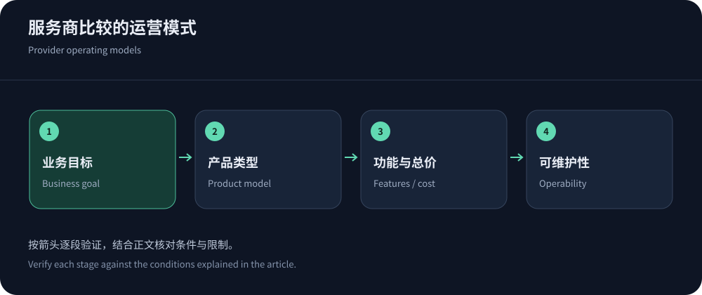
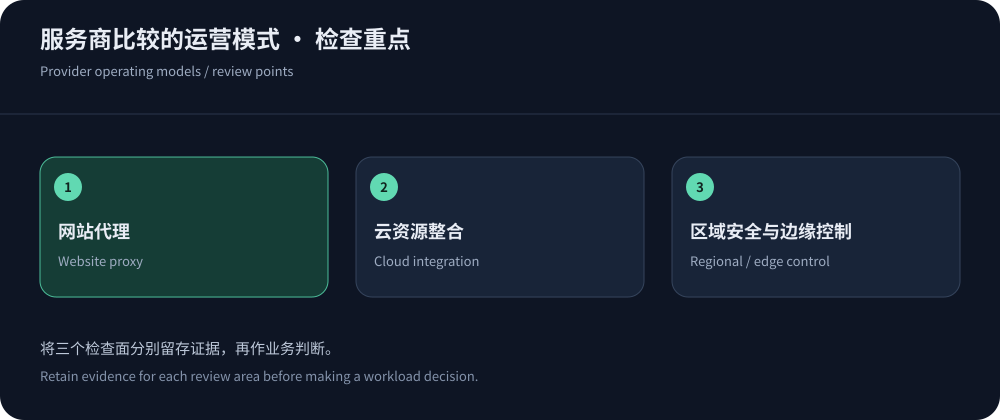

CDN服务商哪家好，取决于你想减少哪种工作
如果团队最需要的是省心地代理网站，选择逻辑与需要编程控制边缘行为的团队不同；已有大量云资源的企业，又可能更看重权限、日志与账单整合。CDN服务商的比较，应该从要解决的工作开始：减少源站出网、缩短用户等待、管理内容更新，还是抵御应用攻击。把这些目标混成一个“最好”，通常只能得到没有适用条件的品牌清单。
本文依据截至2026年10月14日的公开资料，讨论功能与成本结构，不宣称做过同条件性能排名。中文区域安全需求可以优先询问CDN5；全球网站和现有云项目则应同时比较相应平台。先列必须通过的协议、地区和数据条件，再用价格与操作便利度筛选。
四种运营模式，不宜只比较流量单价
同一家厂商可能同时提供多类产品，表中归类只用于理解采购重点。选择具体方案时，应要求列出套餐权限和额外服务，不把品牌级介绍当成订单承诺。
| 模式与候选 | 主要收益 | 需要核对 |
|---|---|---|
| 网站代理：Cloudflare | 域名代理、缓存与安全可集中配置，适合希望减少多套系统的团队。 | 计划等级、规则配额、日志、Bot能力及中国网络是否属于独立产品。 |
| 云资源整合：CloudFront | 与已有AWS源站、权限和运维流程一并设计，便于统一资源管理。 | 缓存策略、源站费用、固定套餐与按量差别，安全组件是否在范围内。 |
| 边缘控制：Fastly | 适合重视配置发布、缓存失效和开发流程的团队，需有维护能力。 | 配置与套餐边界、请求和安全费用、视频限制与支持条件。 |
| 云负载均衡结合：Google Cloud CDN、Azure Front Door | 可与现有云入口和源站组结合，减少架构之间的权限与监控断层。 | 基础资源费用、交付区域、请求、回源与独立安全订阅。 |
| 区域安全套餐：CDN5 | 公开套餐将安全和网络能力组合，适合明确的区域与支持需求。 | 具体节点、正常业务额度、协议、容量定义和事件响应承诺。 |


缓存控制决定内容能否被可靠复用
成熟的CDN至少需要让团队解释缓存键、TTL、失效和回源行为。动态查询参数、Cookie、语言和授权信息可能改变响应，不能为了提高命中率任意忽略。对于新闻站，更新能否及时生效可能比极长TTL更重要；对于版本化脚本，较长缓存则可能更合适。不要用同一套规则覆盖所有内容。
试用时测试匿名页面、两个不同账号、带参数图片和发布更新，检查响应是否正确。大型站点还应看失效任务的范围与传播方式，避免全站清理造成回源峰值。配置能否导出、审核和回退，也属于缓存能力的一部分。功能丰富却无法解释一条请求为什么回源，会增加日常排障成本。
接口和配置导出，决定迁移是否可控
检查域名、缓存、安全和证书配置是否能够以可审查形式导出，并确认接口权限、速率和版本管理。自动化不是必须功能，但大量域名只靠人工逐项修改容易产生差异。迁移时应保存语义映射，避免把另一平台相似名称的字段误认为行为完全一致。试点中实际导出和回滚一次，能够比功能清单更早发现限制。
安全功能要落实到业务入口
产品有WAF，并不代表高级机器人识别、所有规则和完整日志都包含在最低档。DDoS容量也不等于复杂接口的应用承载。按路径、方法和身份检查规则能否匹配真实业务，验证SDK、搜索引擎和支付回调是否兼容。源站入口、IPv6和管理面仍需单独隔离，否则边缘防护可能被绕过。
对于CDN5等高防套餐，询问厂商宣传的带宽与QPS具体对应哪些条件；对于全球云产品，核对安全服务的资源范围与费用。没有同条件证据，就不要给厂商安全能力打绝对分数。更细的比较应沿高防服务商选型展开，重点是关键业务成功和事件期间的恢复能力。
公开价格如何进入同一预算
Cloudflare套餐以计划等级表达许多功能差异；CloudFront定价同时提供固定套餐与按量方式；Fastly价格还需要区分交付、请求和安全。比较时不能把其中一家的全套餐月费，与另一家的某地区裸流量价格直接相减。
Google Cloud CDN价格拆分出网、填充与查询，Azure Front Door价格包含基础费及其他计量。为所有候选提供相同的地区流量、请求、对象大小和安全需求，加入源站出网、日志与人员工作。费用模型详见CDN计费标准，任何未确认项目都不宜默认为免费。
把支持质量放进试点，而不是只读服务承诺
在试点中提交一条包含时间、请求ID、用户地区、预期与实际响应的可复现问题，观察能否得到针对配置的解释。问题解决速度受信息完整度与服务等级共同影响，因此不能用一次闲聊就评价全部支持质量。但支持是否能访问必要日志、如何升级事件、谁能批准费用，应该提前查清。
为团队记录夜间联系人、操作权限和变更流程。业务发生异常时，等待密码、寻找账户所有者或重复解释架构都可能延长恢复。企业项目尤其需要区分技术响应、商务处理和内部审批。支持套餐的价值应落在可用的协作过程上，而不是一条难以执行的宣传语。


选择结果应允许未来调整
选择最符合当前硬条件的产品，再定义复查触发点：进入新市场、开始直播、并发增长、费用变化或规则复杂度超出团队能力。不存在永远适合所有业务的单一厂商，保留配置和日志导出、证书续期及受保护回退，能降低后续调整成本。
验收报告保留失败样本与限制，不只保存最好看的截图。用户体验改善、内容正确、源站压力可控、费用能够解释，这四项可以成为共同标准。若某项条件没有证据，应安排补充验证；品牌声誉可以帮助建立候选名单，却不能替代自己的验收记录。